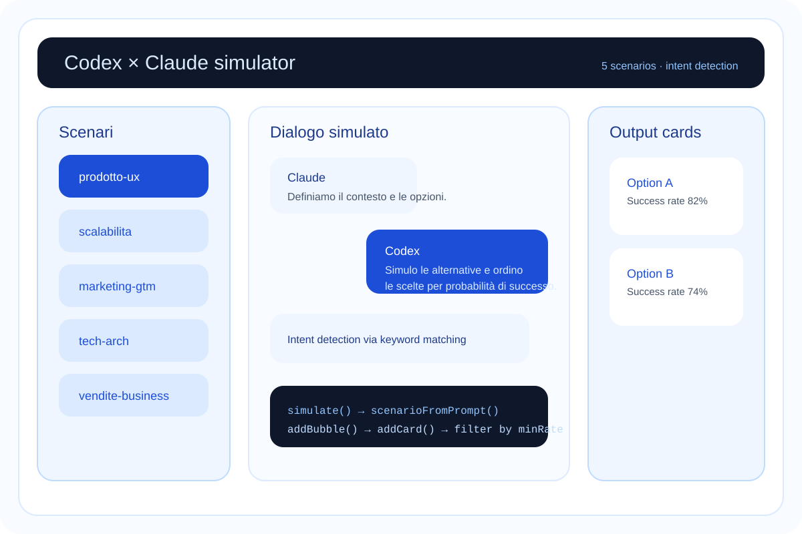

Simulatore web full-stack: un CNN PyTorch riconosce le emozioni da immagine, i risultati vengono analizzati in streaming da Claude API e presentati in un'interfaccia Next.js con Server-Sent Events.

Claude × Codex mette insieme due modelli: un CNN addestrato su FER2013 per la classificazione delle emozioni facciali, e Claude API per l'interpretazione in linguaggio naturale dei risultati. L'utente carica un'immagine, il backend Python esegue l'inferenza PyTorch, i logit per 7 classi emotive vengono passati a Claude che li commenta in streaming.
La sfida tecnica principale era la latenza: inferenza ML + chiamata LLM in sequenza può essere lenta. La soluzione è SSE — il testo di Claude appare carattere per carattere mentre il modello genera, senza aspettare la risposta completa.
La route Next.js è un proxy che riceve la richiesta dal client React, apre uno stream con Claude API e lo converte in SSE standard. Il client non chiama mai Anthropic direttamente — la API key rimane lato server.
import Anthropic from '@anthropic-ai/sdk';
export async function POST(req: Request) {
const { prompt, emotions } = await req.json();
const client = new Anthropic();
const stream = await client.messages.stream({
model: 'claude-opus-4-6',
max_tokens: 1024,
messages: [{
role: 'user',
content: `Analizza queste probabilità emotive in italiano:\n`
+ JSON.stringify(emotions, null, 2)
+ `\n\nDomanda: ${prompt}`,
}],
});
const encoder = new TextEncoder();
const readable = new ReadableStream({
async start(controller) {
for await (const chunk of stream) {
if (chunk.type === 'content_block_delta') {
const data = JSON.stringify({ text: chunk.delta.text });
controller.enqueue(encoder.encode(`data: ${data}\n\n`));
}
}
controller.enqueue(encoder.encode('data: [DONE]\n\n'));
controller.close();
},
});
return new Response(readable, {
headers: {
'Content-Type': 'text/event-stream',
'Cache-Control': 'no-cache',
'Connection': 'keep-alive',
},
});
}Il backend Python espone un singolo endpoint FastAPI. Il modello viene caricato una volta all'avvio — non ad ogni richiesta — per non pagare il costo di deserializzazione ad ogni inference.
from fastapi import FastAPI, UploadFile
import torch, torchvision.transforms as T
from PIL import Image
import io
app = FastAPI()
EMOTIONS = ["angry","disgust","fear","happy","neutral","sad","surprise"]
# Caricato una volta — non ad ogni richiesta
model = EmotionCNN(num_classes=7)
model.load_state_dict(torch.load("emotion_cnn.pt", map_location="cpu"))
model.eval()
transform = T.Compose([
T.Grayscale(), T.Resize((48, 48)),
T.ToTensor(), T.Normalize([0.5], [0.5]),
])
@app.post("/predict")
async def predict(file: UploadFile):
img = Image.open(io.BytesIO(await file.read()))
tensor = transform(img).unsqueeze(0) # [1, 1, 48, 48]
with torch.no_grad():
probs = torch.softmax(model(tensor), dim=1)[0]
return {e: round(float(p), 4) for e, p in zip(EMOTIONS, probs)}Il CNN usa tre blocchi convoluzionali classici seguiti da un global average pooling che rende il modello indipendente dalla dimensione di input.
import torch.nn as nn
class EmotionCNN(nn.Module):
def __init__(self, num_classes: int = 7):
super().__init__()
self.features = nn.Sequential(
nn.Conv2d(1, 32, 3, padding=1), nn.ReLU(inplace=True), nn.MaxPool2d(2),
nn.Conv2d(32, 64, 3, padding=1), nn.ReLU(inplace=True), nn.MaxPool2d(2),
nn.Conv2d(64, 128, 3, padding=1), nn.ReLU(inplace=True), nn.MaxPool2d(2),
)
self.classifier = nn.Sequential(
nn.AdaptiveAvgPool2d(1), # feature map → scalare per canale
nn.Flatten(), # [batch, 128]
nn.Linear(128, 64), nn.ReLU(inplace=True),
nn.Dropout(p=0.5),
nn.Linear(64, num_classes),
)
def forward(self, x):
return self.classifier(self.features(x))